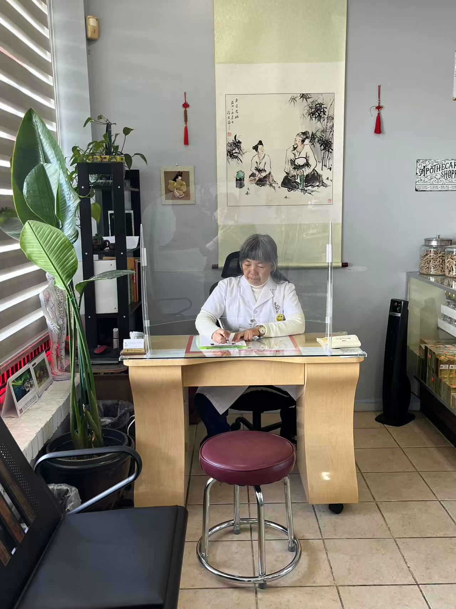

关于我
从倾听开始
我相信，每个人的身体状况和健康需求都不相同。我重视倾听患者的感受，认真了解他们的健康状况，并据此制定个人中医调理方案。
我毕业于美国加利福尼亚州国际医药大学（University of East-West Medicine），获得中医硕士学位。我持有佐治亚州和加利福尼亚州针灸师执照，以及 NCBAHM（原 NCCAOM）的针灸与中草药专业认证。
我希望通过针灸、中药及其他传统中医疗法，帮助患者缓解不适、改善生活质量。
“认真对待每一位患者，用心做好每一次治疗。”
我的中医之路
我与中医的缘分始于童年。小时候身体比较弱，家中的一位老中医用中药帮助我调理身体。这段经历让我对中医产生了浓厚的兴趣。后来，我读到明朝著名医药学家李时珍潜心研究中药、帮助他人的故事，坚定了学习中医的决心。对我而言，中医不仅是一门专业，更是一份可以关怀他人、服务社会的事业。
专业背景
专业教育与资格
学历
中医学硕士
美国国际医药大学 · University of East-West Medicine
佐治亚州执照
执业针灸师
Georgia Composite Medical Board · 执照号码 559
加利福尼亚州执照
执业针灸师
California Acupuncture Board · 执照号码 AC 18571
专业认证
针灸与中草药专业认证
NCBAHM（原 NCCAOM）· 认证编号 844242
其他培训与专业会员资格
- 世界中医药学会联合会“植物精油疗法”证书
- 德国莱茵 TÜV 植物精油疗法专业健康护理职能模块证书
- 世界中医药学会联合会“慢性病管理”专业委员会委员
调理方式
根据个人情况制定方案
刘凌针灸师会在了解您的情况后，与您讨论适合的调理方式。以下项目是否适合您，需结合个人评估及诊所实际提供的服务确定。
针灸
中药
拔罐
艾灸
刮痧
电针
可咨询的健康问题
以下问题可在评估时与刘凌针灸师讨论。列出这些问题，并不表示针灸或中药能够治疗或治愈相关疾病。
疼痛与肌肉紧张
颈部、肩部、腰背和关节不适，肌肉紧张及僵硬。
睡眠、压力与疲劳
睡眠困难、压力、紧张与疲劳。
消化相关不适
腹胀、消化不良、恶心、食欲变化与肠道不适。
女性与男性健康
月经或更年期不适、压力、睡眠问题及与年龄相关的健康需求。
其他不适与辅助照护
头痛、季节性不适、皮肤问题及康复期辅助照护，也可在评估时讨论。辅助照护不替代医学治疗。
联系与预约